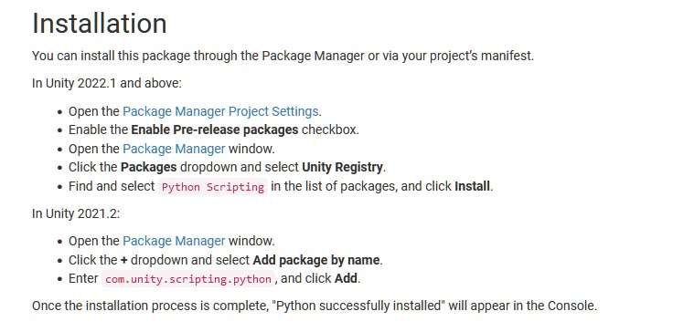
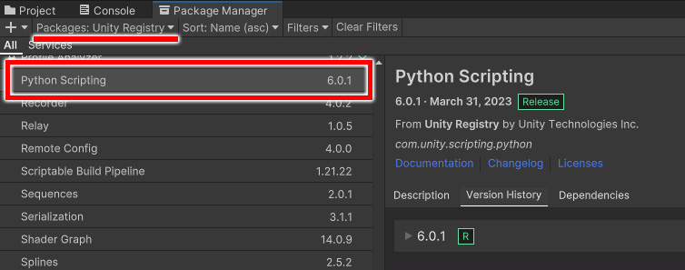
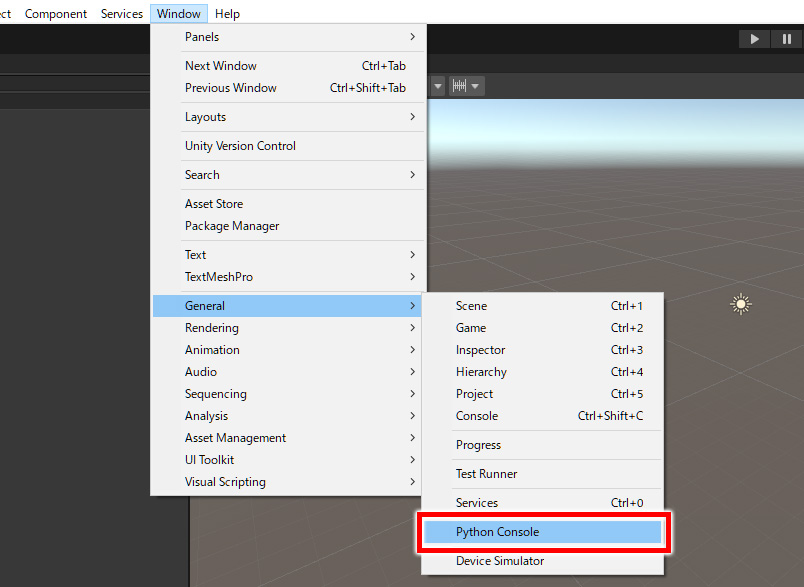
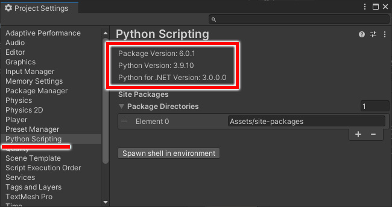

Unity
Python for Unity
インストール方法
2024/03
Unityのプラグインが自作できれば作業は捗るんだろうけど、C#は書けない。。
そんなジレンマにモヤモヤしている中、PythonでUnityのプラグイン開発ができるAPI があると知り、調べてみることにしました。
今回は、Python for Unity のインストール方法について解説します。
調査の経緯
筆者はUnityでのゲーム開発経験がありますが、特に 背景CGデザイナーにとってインハウスのツールの需要は高い のではないかと感じました。
納品するデータの品質は高いに越したことはないけど、マンパワーで管理するのは非合理的かつ確実性に欠ける。。
かといって、プログラマーさんがそこまで完璧にデザイナーの意図を汲み取ってくれるのは期待できない…。
DCCツールのプラグイン開発経験があるデザイナーにとっては、使い慣れたPythonを活用 できればかなりのシナジーが期待できます。
バージョン対応表
公式ドキュメント から、バージョン対応表を下記にまとめました。(2024/3時点)
| Python for Unity | Unity | Python |
|---|---|---|
| 2.0.1 ~ 2.1.1 | 2019.3~ | 2.7.5 |
| 4.0.0 ~ 6.0.1 | 2020.2~ (推奨:2021.2~) |
3.9.10 |
| 7.0.1 | 2020.3~ | 3.10.6 |
本記事では、下記のバージョンを使用して解説します。
動作環境
- Python for Unity：6.0.1
- Unity：2022.3.17f1
インストール方法
Window > Package Manager からインストールが可能です。 公式ドキュメントによると、Unityバージョンによってインストール手順が異なるようです。
 
ドキュメントには、Edit > Project Settings から、Enable Pre-release Packages のチェックボックスをONにするとありましたが、検証した環境ではこの設定は必要ありませんでした。
もしパッケージマネージャーに Python Scripting がない場合は、こちらの設定を試すと良いかもしれません。
スクリプトエディタの起動
インストール完了後、Window > General > Python Console からスクリプトエディタを起動できます。

ウィンドウ下部のコンソールにスクリプトを入力し、Execute メニュー・または Ctrl+Enter でスクリプトを実行できます。
バージョンの確認
Edit > Project Settings の、Python for Unity の項目からバージョン情報を確認できます。

ちなみに、Pythonはバンドルされたカスタムビルド版を使用しているとのことで、バージョンの変更はできないようです。
インストールされたPythonのディレクトリは、sys.path で調べられます。
本記事の環境では、以下のディレクトリにインストールされていました。
[Unityプロジェクト階層]/Library/PyhtonInstallパッケージの検索パス
検索パスに任意のパッケージパスを追加したい場合は、Project Settings > Python for Unity の Site Packages の項目から追加が可能です。
sys.path に指定したパスが追加されますが、適用にはUnityの再起動が必要です。